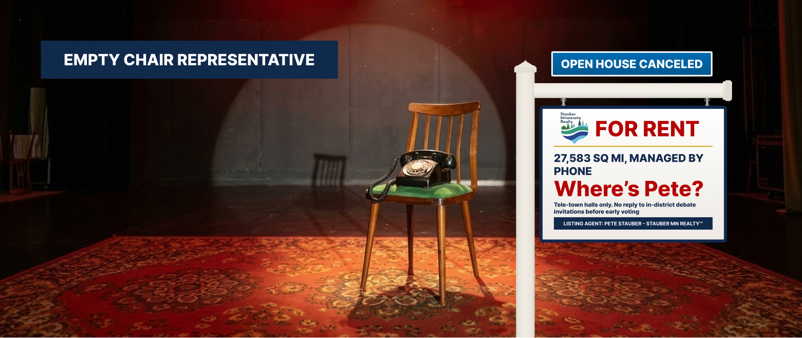

Where’s Pete? — An Absentee-Managed Portfolio in Northern Minnesota
Duluth, Hibbing, Brainerd, Cambridge, Grand Marais, International Falls & points between · MN-08
A large property with a small front door
Minnesota’s 8th District is 27,583 square miles — bigger than West Virginia — and home to 727,411 tenants. It is managed on a strict telephone-only basis. The property manager holds “tele-town halls”: his office dials out, tenants listen, and a screened handful get to ask a question.
Tenants have asked for an in-person meeting. In March 2025 about 900 of them filled the auditorium at Duluth East High School for a town hall organized by local residents. The stage had a chair with the agent’s name on it. It stayed empty. His office said he was in Baxter speaking to Republicans that day, and described attendees as “paid agitators” — a claim for which no evidence was offered.
Asked about the format, the agent said: “We’ve been doing them for six and a half years, and they’re popular.” We agree the phone is popular. So is the front door.
In January 2026, Agent Stauber spoke to members at the Teamsters Local 346 hall in Duluth. A crowd wrapped around the block asking “Where’s Pete?”; some outlets were denied entry; he left through the back door. In September 2026, with early voting days away, his challenger invited him to debate at any of six town halls across the district. WTIP asked his office for a debate or an interview before early voting. As of publication, his office had not responded.
Showings, cancellations, and the back door
| Date | Event | Details | Price |
|---|---|---|---|
| Feb 2025 | Recess | The agent returns to the district for small meetings on Voyageurs and Boundary Waters recreation; no town halls. NRCC chair Richard Hudson had advised Republicans to stop holding in-person town halls.North Shore Journal (citing Politico) | — |
| Mar 19–25, 2025 | Tenant meetings | Protests at the Hermantown office; a rally for postal workers; hundreds gather on Congdon Boulevard to support the Duluth EPA lab.Brainerd Dispatch / Duluth News Tribune | — |
| Mar 24, 2025 | Phone meeting | Tele-town hall; his office reports 17,000 listeners.Brainerd Dispatch | Phone |
| Mar 2025 | No-show | About 900 people attend a town hall at Duluth East High School. An empty chair bears his name. Office: he was in Baxter speaking to Republicans; calls attendees “paid agitators.”Brainerd Dispatch | Empty chair |
| Sept 19–Nov 12, 2025 | Office closed | House leadership keeps the chamber out of session for about 54 days through the 43-day shutdown. Members’ pay continues.CBS News | 54 days |
| Jan 28, 2026 | Back door | Speaks to Teamsters Local 346 in Duluth about his Faster Labor Contracts Act; exits through the back past a large crowd asking to talk to him; does not respond to requests for comment.Duluth News Tribune | — |
| Sept 9, 2026 | Showing requested | Challenger invites him to debate at six town halls. WTIP asks for a debate or interview before early voting; his office has not responded.WTIP | No reply |
| Sept 18, 2026 | Voting opens | Early and absentee voting begin in Minnesota.Minnesota Secretary of State | — |
The management record
The explanation, in full
What the agent says
“We’ve been doing them for six and a half years, and they’re popular.”Rep. Pete Stauber on telephone town halls, March 2025 (Brainerd Dispatch)
What the public record shows
- No in-person town hall found in our search of local coverage from 2025–2026
- Skipped a ~900-person town hall in Duluth; office called attendees “paid agitators” without evidence
- Left a Duluth union hall through the back door, January 2026
- No response to an invitation to debate at six in-district town halls, or to WTIP’s interview request before early voting (he did join an August forum at Farmfest, in southwestern Minnesota)
- Did attend the Aug. 31, 2026 groundbreaking of the bridge he voted against (see listing)
Items the agent would prefer you skip
Seller’s Disclosure Statement
- Does the agent ever appear in person?Yes — at friendly venues. He spoke to Republicans in Baxter the day of the Duluth East town hall, addressed Teamsters members in January 2026, joined a moderated candidate forum with his challenger at Farmfest in August 2026 — held near Morgan, in southwestern Minnesota, well outside the 8th District — and attended the Blatnik Bridge groundbreaking with the Transportation Secretary. What we could not find is an open, in-person town hall where any constituent can ask a question.
- What is a tele-town hall?A conference call the office dials out to. The office chooses the topic, the list and the questions. It is a legitimate way to reach rural constituents. It is not a substitute for a room where the tenants choose the questions.
- Were the Duluth attendees “paid agitators”?His office said so. No evidence was offered. The event was organized by a local group and drew about 900 people.
- Will the agent debate before tenants vote?As of September 9, 2026, his office had not responded to invitations to debate or to a request for an interview before early voting.
Similar properties in this neighborhood


Public records cited in this listing
- Brainerd Dispatch / Duluth News Tribune, “As events mount in response to Trump’s cuts, attendees ask: Where’s Stauber?” (March 2025)
- Duluth News Tribune, “Protesters attempt to confront Stauber at union meeting” (Jan. 28, 2026)
- WTIP, “Swanson invites Stauber to debates during 8th District town hall tour” (Sept. 9, 2026)
- North Shore Journal, “Stauber Returns to District for Photo Ops But Not Town Halls” (opinion; cites Politico on NRCC guidance)
- CBS News, “House returns from nearly 2-month absence as government shutdown nears end”
- Northern News Now, “Stauber, Swanson debate farm issues at FarmFest forum” (Aug. 4, 2026)
- Census Reporter, Congressional District 8, MN (ACS 2024)
- Rep. Stauber, office locations
“None found” means our review of 2025–2026 local news coverage turned up no open, in-person town hall. If the agent holds one, we will happily list it.